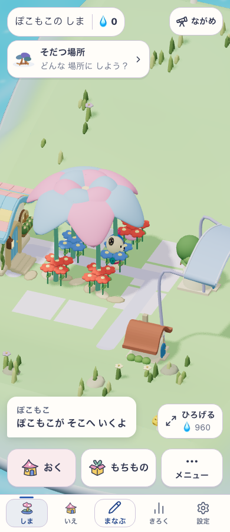
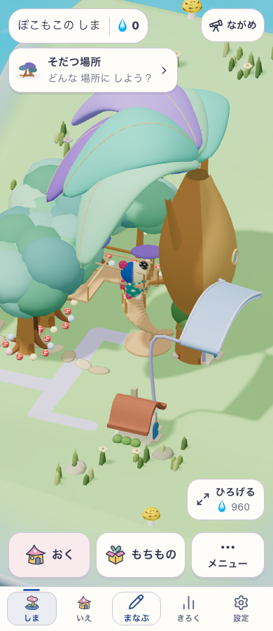

Sansu / ローカル修正記録 / 2026-10-20
花の5株目や、追加した木の成長で、育った場所が消える問題を修正
続報：残っていた木陰・思い出の案内と、種のタップ領域を両立する修正。以下は初回修正時点の記録。
4株だけ許される仕様ではない。つながった植物全体を一つの固定形として照合していたため、株を増やすと以前の屋根や回廊まで失効していた。成熟済みの部分と、屋根・回廊を実際に支える株を分けて導出するよう変更した。
- 2×2の花庭へ5株目を追加・開花させても元の屋根を維持。屋根の中心・大きさ・支持枝は元の4株から作る。
- 2つの花庭を別の花でつないでも、それぞれの屋根を維持。同じ株を複数屋根の支持へ使わない。
- 成熟した木の列へ脇の木を足しても、追加木の成熟後まで元の大樹・回廊を維持。
- 若い花の追加で、成熟した花庭の段階・利用先と水辺との関係が巻き戻らない。木陰とその思い出の案内の維持は未解決。
- 複数の森がつながった際、近くの家を重複割当して同一の場所IDを作らない。
支持株を実際に収納した場合や、接続を障害物で遮った場合は成立条件を再判定する。既存の有限形と描画を再利用し、保存形式と新規美術は追加していない。authored専用構造には今回の部分集合抽出を適用していない。
実画面
固定fixtureを入れた使い捨てプロフィールで、production previewの実描画・選択・「ここで すごす」・利用receiptを390/768幅で確認。画像は390幅。本人の保存データの画像ではない。

花：5株目があっても元の4株の屋根が残る。

森：追加木があっても元の回廊が残る。
検証と適用範囲
Node 22で対象44テスト・build・classic smokeは初期候補でPASS。全体検査で種タップ領域の退行を検出したため木陰の成熟部分抽出を撤回し、対象・種タップ・buildを再検証した。最終候補は47件/5ファイルPASS（木陰の既知問題を示す期待失敗1件を含む）、build/型/アセット容量PASS。検証記録を参照。ブラウザは撤回前候補の花/森×390/768幅の4ケースがPASS。最終ソースの再撮影は未実施。入力hash・共通検査の最終結果は検証記録、ブラウザの対象版・delivery flag・candidate ID・実利用は花と森の記録を参照。
追加→成熟→収納とJSON復元はdomain検査、実画面は成熟後fixtureの利用を確認した証拠。新規2ケースではoffline再読込を実行していない。実取得、本人端末の原因確定、PWA更新、子どもの理解・楽しさ・再訪は未確認。ローカル作業ツリーの修正で、commit・push・公開は行っていない。
仕様と残課題
全体検査は未完。最終候補の全体検査・smoke・ブラウザ再確認が残る。通常の木陰に若木を足すと段階と案内が戻る既知問題は残し、it.failsで明示した。タップ領域の退行を起こした変更は採用していない。作業手順の30分上限で停止。
正本は成長規則と仕様52へ反映。過去の調査結果は修正前の観測として保持する。保存schema・運用手順の変更はないため、その正本・長期memoryは変更しない。
チャッピーとの楽しさの相談で出た追加案は今回の不具合修正とは分けており、未実装。今回の結果を、全機能に未知の不具合がない証拠や、遊びの魅力が確認できた証拠にはしない。
生ログ：output/island-place-addition-fix/（ローカルのみ）。初期検査で見つけた新規屋根候補による既存アーチの支持株横取りは候補の優先順で修正。fixtureのID/距離条件とArray.atの対応環境も訂正し、対象検査・型検査・buildを再実行した。共通検査の初回は修正前ソースのアーチ検査で失敗し、最終ソースを固定して全unitを再実行。初回ログも保持。既存の未commit別作業は保持。